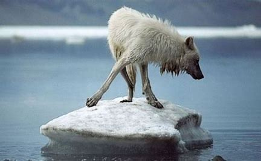
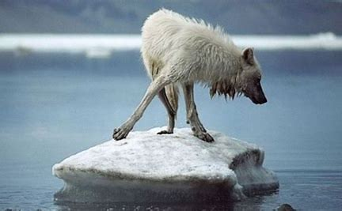

Save the ice caps from melting


 


| The artic fox while being viewed as a least concerned on the endangered species list their prey is going into decline due to the effects of global warming.The arctic seal is also now in danger because of the effects of climate change as the quality and reliablity of the ice will make it harder for them to reach breeding grounds while also avoiding predators such as orcas but this also poses as a problem for polar bears as their main prey is the seal, meaning if the seals dont come the sea ice the polar bears cannot fed and will eventually starve.|
done by sean